長期トレンド
JKMとJEPXシステムプライスの推移グラフ
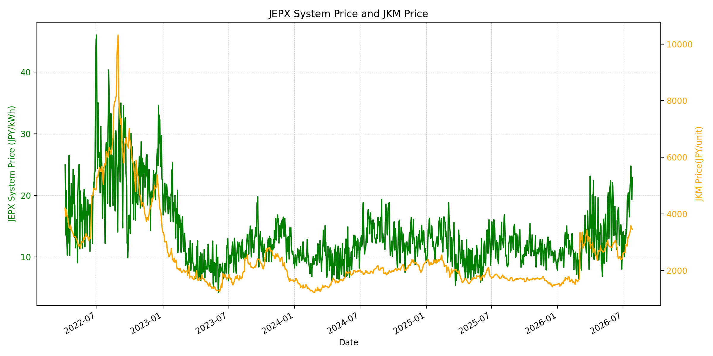
WTIの推移グラフ
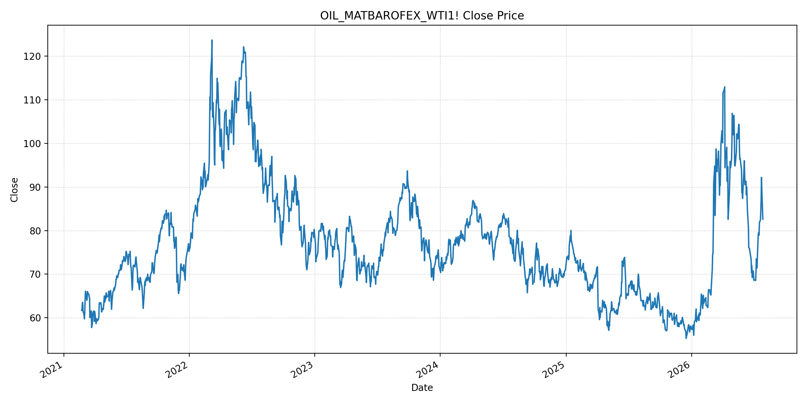
JEPXエリアプライスグラフ（直近一年分）
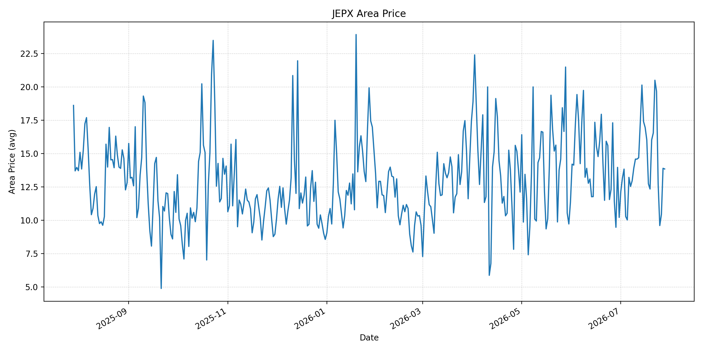
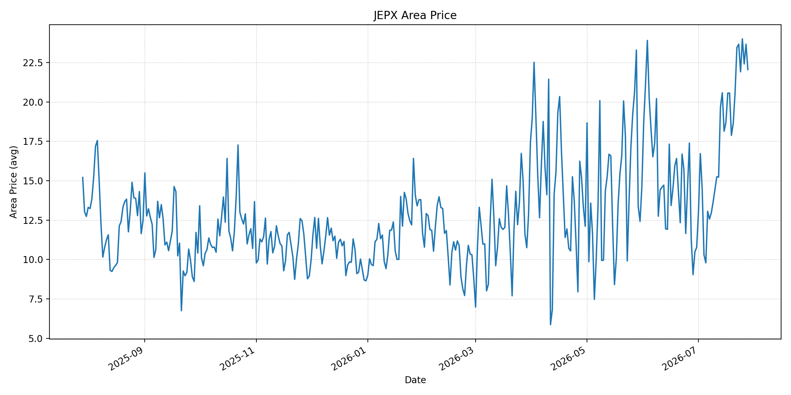
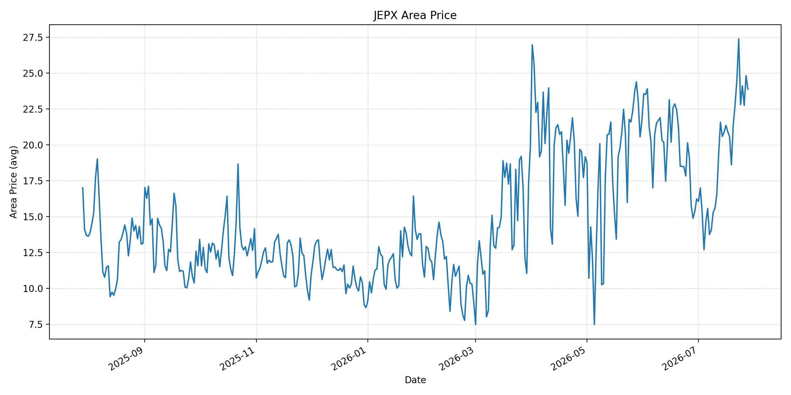
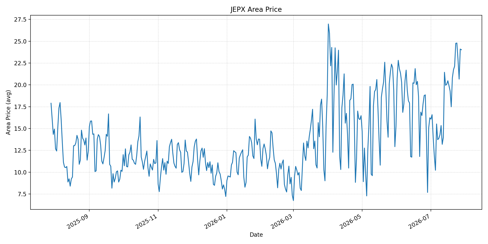
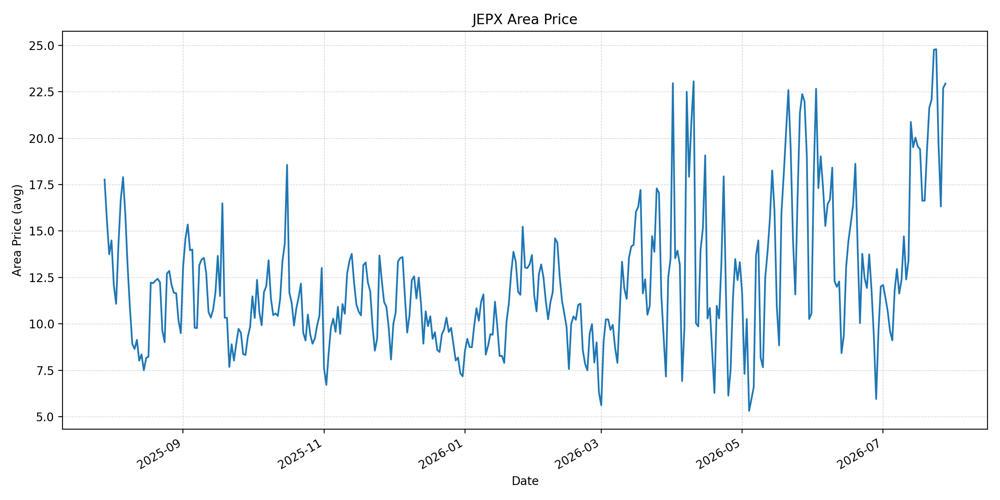
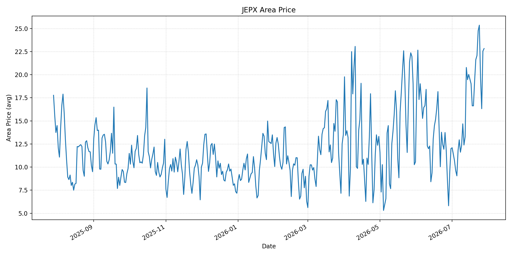
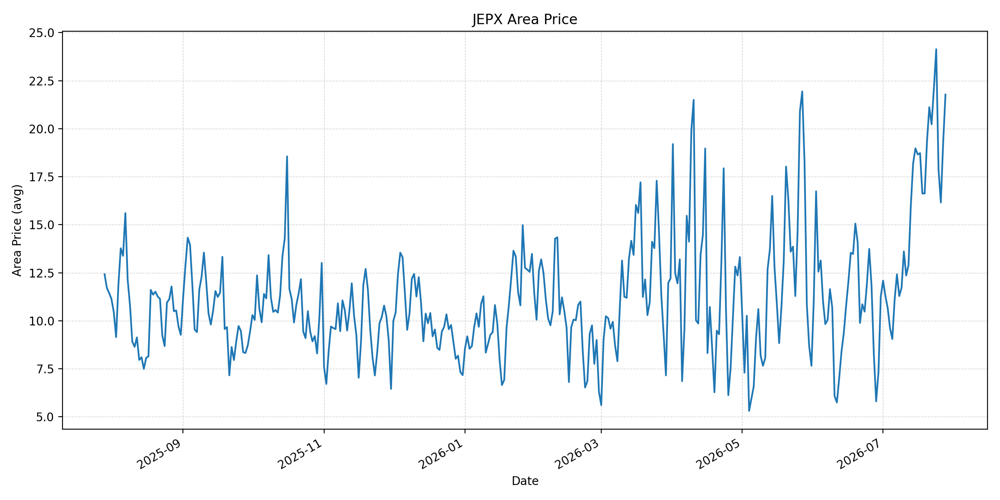
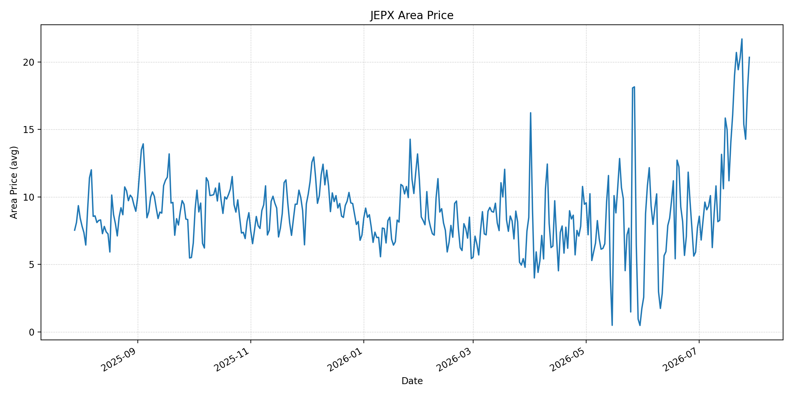
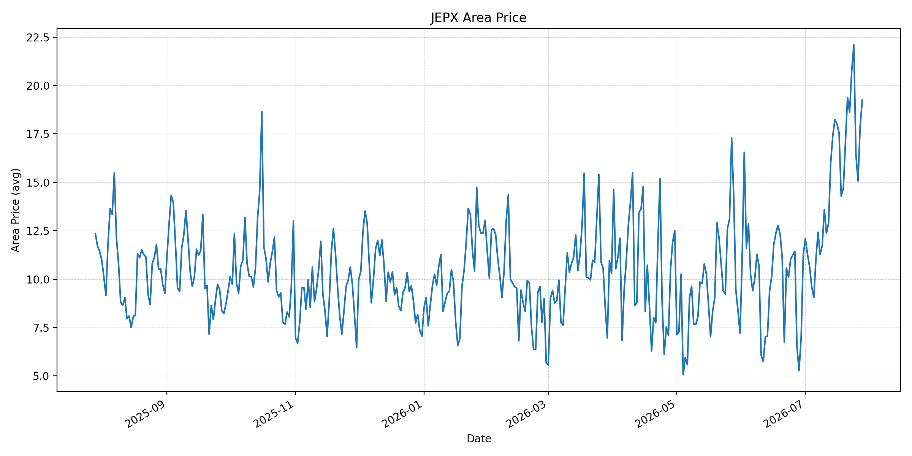
短期トレンド
JKMとJEPXシステムプライスの推移グラフ
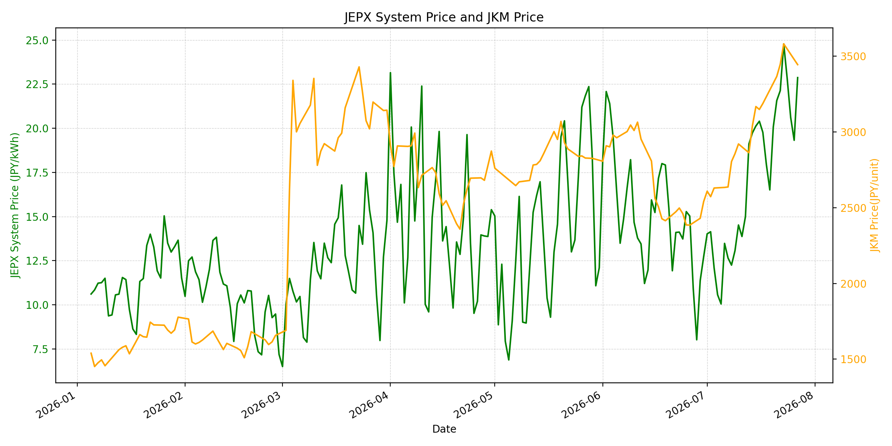
WTIの推移グラフ
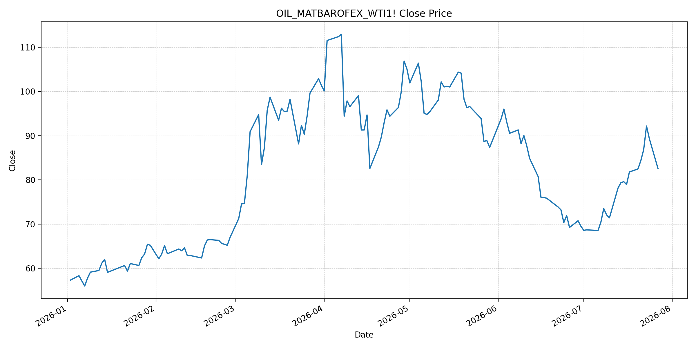
JEPXシステムプライス
JEPXは受渡日ベースの最新非空値で評価しています。最新値は 2026-07-28 分です。先週終値は 2026-07-21 時点の直近値、先月終値は 2026-06-30 時点の直近値で評価しています。
| エリア | 当日価格 | 前日価格 | 前日比（％） | 先週終値 | 先週比（％） | 先月終値 | 先月比（％） | 過去最高値 | 最高値比（％） |
|---|---|---|---|---|---|---|---|---|---|
| システム | 23.06 | 22.87 | 0.83 | 21.57 | 6.91 | 12.73 | 81.15 | 64.06 | -64.00 |
| 北海道 | 13.84 | 13.89 | -0.36 | 16.54 | -16.32 | 10.21 | 35.55 | 73.92 | -81.28 |
| 東北 | 22.05 | 23.66 | -6.80 | 20.58 | 7.14 | 10.78 | 104.55 | 84.92 | -74.03 |
| 東京 | 23.87 | 24.81 | -3.79 | 22.77 | 4.83 | 16.23 | 47.07 | 86.13 | -72.29 |
| 中部 | 24.02 | 24.10 | -0.33 | 21.73 | 10.54 | 16.23 | 48.00 | 52.06 | -53.86 |
| 北陸 | 22.94 | 22.69 | 1.10 | 21.63 | 6.06 | 12.01 | 91.01 | 46.48 | -50.65 |
| 関西 | 22.83 | 22.55 | 1.24 | 21.63 | 5.55 | 12.00 | 90.25 | 46.48 | -50.89 |
| 中国 | 21.78 | 19.25 | 13.14 | 21.12 | 3.13 | 11.26 | 93.43 | 46.48 | -53.15 |
| 四国 | 20.35 | 17.92 | 13.56 | 20.71 | -1.74 | 7.72 | 163.60 | 46.48 | -56.22 |
| 九州 | 19.25 | 17.89 | 7.60 | 19.38 | -0.67 | 11.24 | 71.26 | 40.54 | -52.52 |
LNG先物価格
最新値は 2026-07-27 の LNG(close) です。前日価格は直近非空値の 2026-07-24、先週終値は 2026-07-17 時点の直近値、先月終値は 2026-06-30 時点の直近値で評価しています。
| 当日価格 | 前日価格 | 前日比（％） | 先週終値 | 先週比（％） | 先月終値 | 先月比（％） | 過去最高値 | 最高値比（％） |
|---|---|---|---|---|---|---|---|---|
| 3445.00 | 3548.00 | -2.90 | 3188.00 | 8.06 | 2541.00 | 35.58 | 10319.00 | -66.61 |
石油先物価格
最新値は 2026-07-27 の OIL(close) です。前日価格は直近非空値の 2026-07-24、先週終値は 2026-07-20 時点の直近値、先月終値は 2026-06-30 時点の直近値で評価しています。
| 当日価格 | 前日価格 | 前日比（％） | 先週終値 | 先週比（％） | 先月終値 | 先月比（％） | 過去最高値 | 最高値比（％） |
|---|---|---|---|---|---|---|---|---|
| 82.61 | 89.31 | -7.50 | 82.48 | 0.16 | 69.50 | 18.86 | 123.70 | -33.22 |
ニュース
イラン情勢に関するニュース
- 2026年7月28日、APは、米国とイランの攻撃停止が続く中、カタールとパキスタンなどの仲介で停戦・航行管理を巡る協議に進展があると報じました。焦点はホルムズ海峡の安全航行と管理費用の扱いですが、周辺ではドローン攻撃も続き、合意はなお不安定です。 参照: AP, 2026-07-28
- Guardianは、米軍のイラン攻撃停止と交渉再開観測を受けて、Brentが一時9％下落し88ドルを下回ったと報じました。ただし、アナリストは「短い停戦」だけでは供給回復の保証にならないと見ています。 参照: Guardian, 2026-07-27
ホルムズ海峡経由の石油・LNGに関するニュース
- APは、米国とイランが攻撃を停止したことで原油価格が緩んだと報じました。市場は外交の再開を好感していますが、ホルムズ海峡の実際の通航正常化には時間がかかる可能性があります。 参照: AP, 2026-07-27
- JOGMECは7月27日のLNG市況更新で、7月20〜24日の北東アジアJKMが中東緊張と供給不安を背景に上昇し、7月24日は利益確定で小幅下落したものの、低い22ドル台/MMBtuにとどまったと整理しています。 参照: JOGMEC, 2026-07-27
ホルムズ海峡経由でない石油・LNGに関するニュース
- WSJは、油価の大幅下落は長続きしない可能性があるとし、ホルムズ海峡の混乱に加えて、紅海のバブエルマンデブ海峡でのフーシ派リスクが供給制約を残すと報じました。 参照: WSJ, 2026-07-27
- Guardianも、ホルムズ海峡だけでなくバブエルマンデブ海峡の船舶通航にも混乱が及んでいると報じています。ホルムズ回避ルートを使っても、輸送コストと保険料の上振れリスクは残ります。 参照: Guardian, 2026-07-27
日本国内のイラン戦争に関係するニュース
- 過去24時間で、JEPX制度、国内電力需給ルール、または日本政府のイラン戦争関連対策を直接変更する主要な新規公表は確認できませんでした。
- 関連する国内材料として、JOGMECは7月27日に、METIが7月22日時点で発電用LNG在庫を251万トン、前週比9万トン増と公表したと整理しました。また、7月24日には経済産業省がナフサを含む石油製品備蓄と調達先多様化を検討する作業部会を設置したと報じられています。 参照: JOGMEC, 2026-07-27 / Jiji Press / Nippon.com, 2026-07-24
インサイト
ニュース事項による日本の電力市場への影響（短期：数日〜1週間）
- JEPXシステムプライスは 23.06 円/kWhで前日比 0.83%、先週比 6.91%、先月比 81.15% です。油価は外交期待で反落しましたが、スポット電力は6月末比でなお高く、燃料リスクの後退が即時に価格低下へつながっていません。
- OILは最新非空値で 82.61 と前回比 -7.50%、LNGは 3445.00 と前回比 -2.90% です。一方、JOGMECはJKMが低い22ドル台/MMBtuに残ったと整理しており、LNG火力の限界費用は短期的に下がりにくいです。
- 中国は前日比 13.14%、四国は 13.56%、九州は 7.60% 上昇しました。ホルムズと紅海の輸送リスクが完全には解けていないため、数日〜1週間は西日本でも燃料プレミアムを織り込んだ価格形成が続きやすいです。
ニュース事項による日本の電力市場への影響（長期：1ヶ月〜半年）
- LNGは先月比 35.58%、OILは 18.86% と、直近反落後も6月末比では高水準です。停戦協議が進んでも、ホルムズの通航正常化と紅海側の安全確保が遅れれば、1ヶ月〜半年の燃料調達コストは上振れしやすいです。
- JEPXシステムは先月比 81.15%、東北は 104.55%、四国は 163.60% 上昇しています。国内ではLNG在庫が前週比で増えていますが、在庫増は供給安定の材料であり、国際燃料プレミアムを直ちに消す材料ではありません。
- 過去最高値比ではシステム -64.00%、LNG -66.61%、OIL -33.22% と歴史的ピークには届いていません。ただし、日本が石油製品備蓄と調達先多様化の検討を進めていること自体、ホルムズ依存リスクが中期の制度・調達コストに残ることを示しています。